Señuelos
Señuelos Accesorios
Accesorios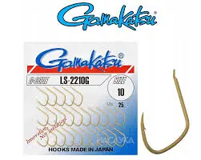
Gamakatsu LS-2210 G3,75 € IVA incluido
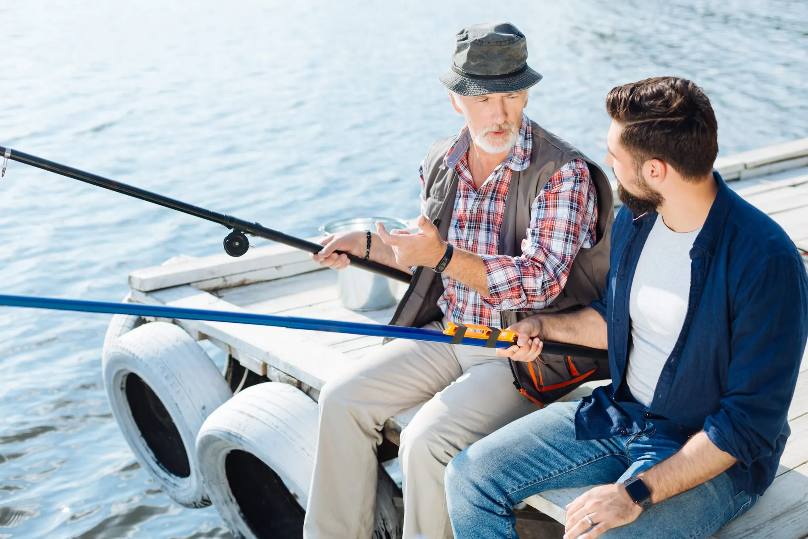
 -20 %Carrete Daiwa Emblem Surf 45 SCW QD R175,00 €
-20 %Carrete Daiwa Emblem Surf 45 SCW QD R175,00 €  -11 %Mochila Grande Turkana Fishing125,00 €
-11 %Mochila Grande Turkana Fishing125,00 € 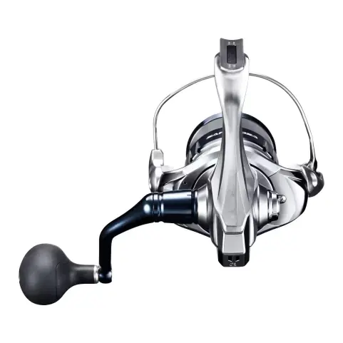
-5 %Carrete Shimano Saragosa SW 10000 PG265,95 €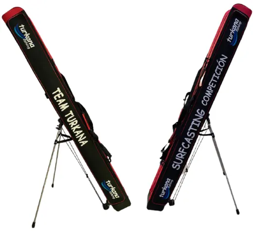
-18 %Funda Portacañas Tripode Eco Turkana65,00 € -7 %Espaldera Breakaway79,00 €
-7 %Espaldera Breakaway79,00 € 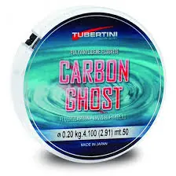
-31 %Tubertini Caron Gosh 50mt10,95 € -18 %Tuertini Tatanka neutral 150mt18,50 €
-18 %Tuertini Tatanka neutral 150mt18,50 €  -25 %DTD Ballistic Real Fish10,50 €
-25 %DTD Ballistic Real Fish10,50 € 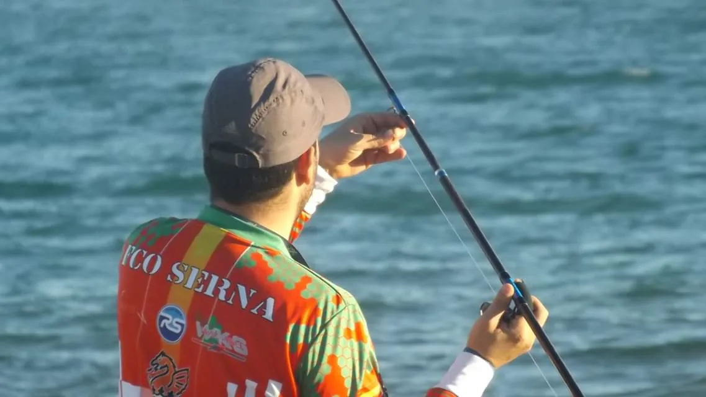
Pesca deportiva y de competiciónSurfcasting, spinning, egging y embarcaciónMás de 5.000 clientes y 65 reseñas en Google con la nota de Excelente. Trabajamos Shimano, Daiwa, Yuki, DTD y Yamashita, entre otras marcas.
Ver toda la tiendaAvda. de la Constitución, 139, en Pilar de la Horadada (Alicante). Te atendemos de lunes a viernes, de 10 a 14 h y de 17 a 20:30 h.
Llamar al 699 56 52 43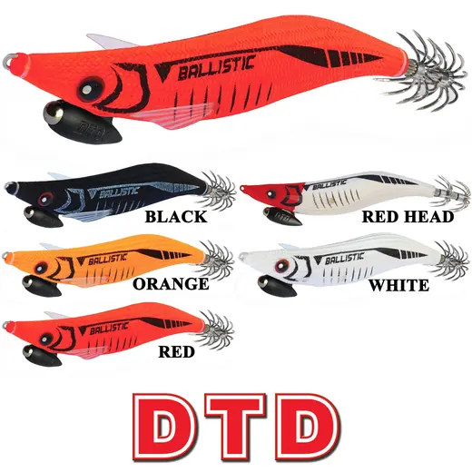
Egging y spinningJibioneras, paseantes y señuelos
Gamakatsu LS-2210 G Mustad Gure hook 10028NP-BN
Mustad Gure hook 10028NP-BN
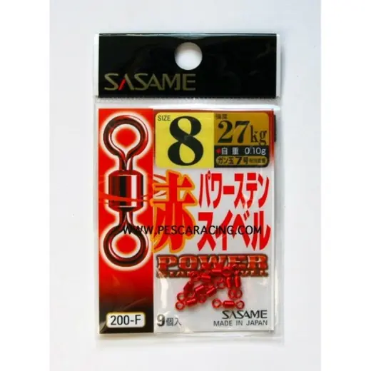
Rolling Sasame 200F Tubertini DH 66
Tubertini DH 66
 Flotador Quo
Flotador Quo
 Yamashita Oppai Sutte 7CM
Yamashita Oppai Sutte 7CM
 Gamakatsu LS-3310F
Gamakatsu LS-3310F
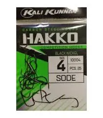
Hakko Sode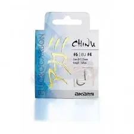
Anzuelo Akami Chinu fluorocarbon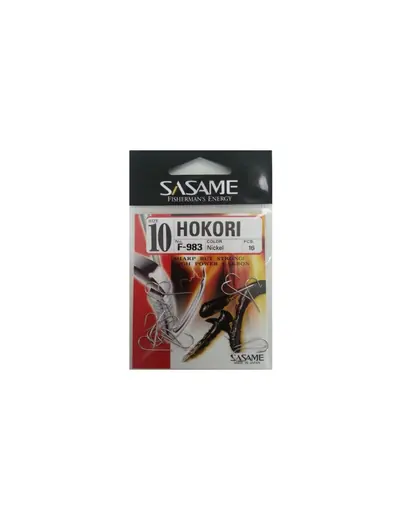
Sasame Hokori F-983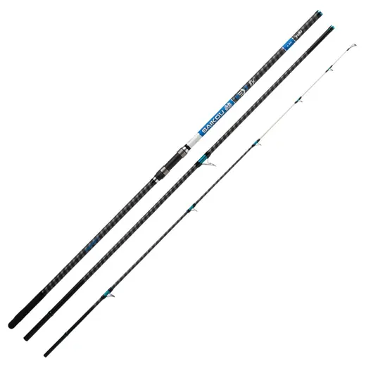
Caña Yuki Saikou Next Gen HW 4.20 Gamakatsu LS-1310N
Gamakatsu LS-1310N
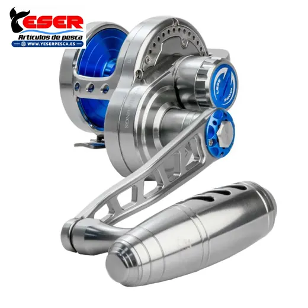
Carrete Yuki Akan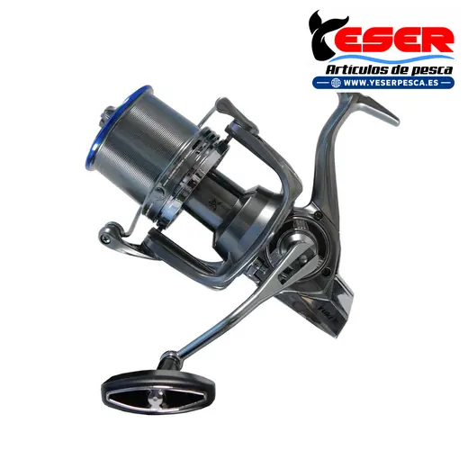
Carrete Yuki Kael 45 Misaki Elochibi Fat Soft 2H
Misaki Elochibi Fat Soft 2H
 Saikou Taper Line 250M
Saikou Taper Line 250M
 Anzuelo Yuki TC DX36
Anzuelo Yuki TC DX36
 Funda Yuki Doble Xtra Holdad
Funda Yuki Doble Xtra Holdad
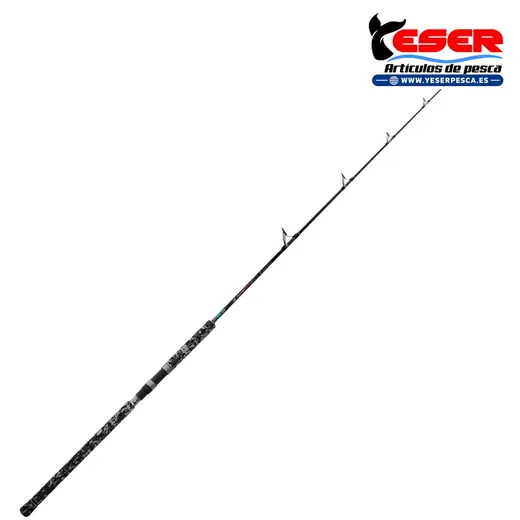
Caña Yuki Bulldozer Nuba 1,80M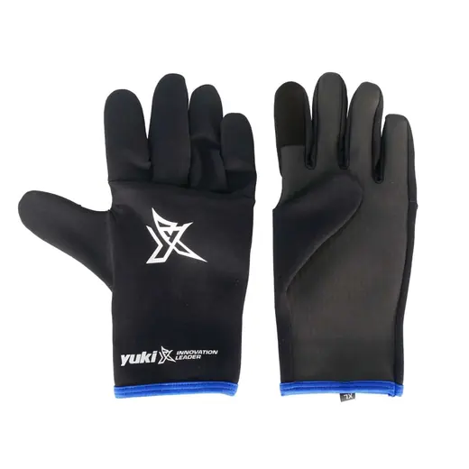
Guantes Yuki ZX Titanium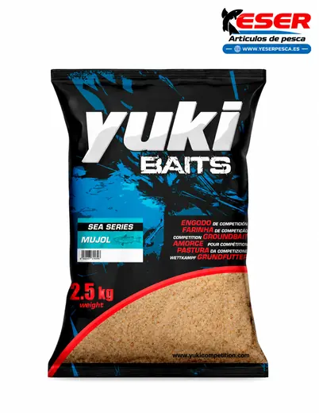
Engodo Mujon 2,5KG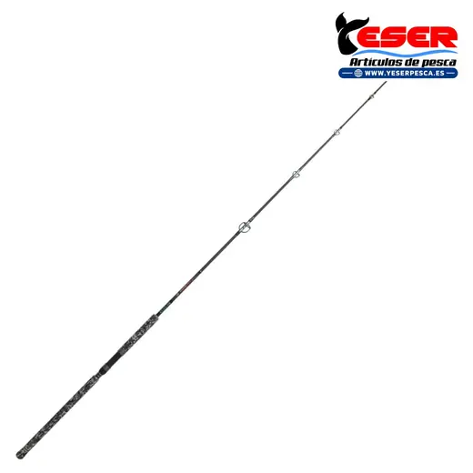
Caña Yuki Bulldozer Nuba Slow Casting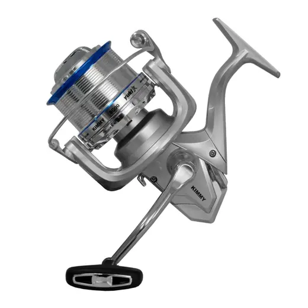
Carrete Yuki Kimmy 8000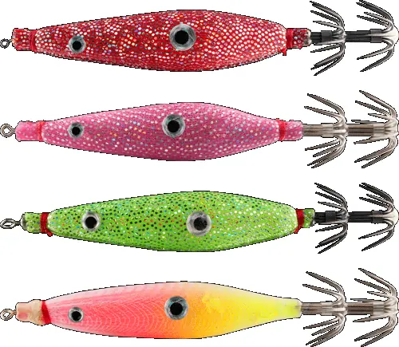
Misaki Elochibi 4 Ojos Blando Doble Corona